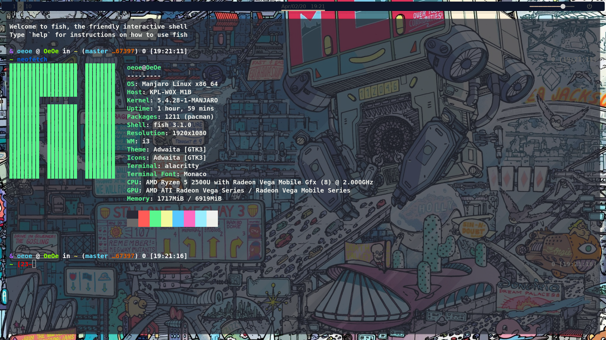
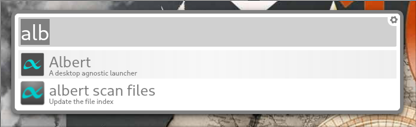
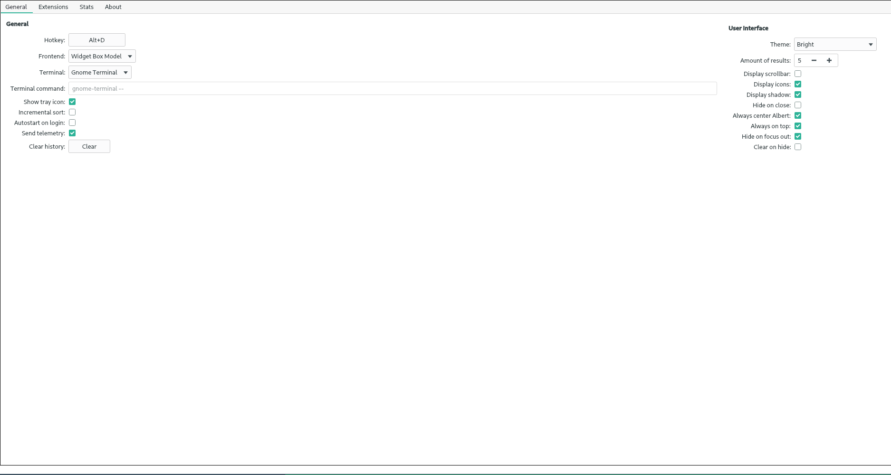
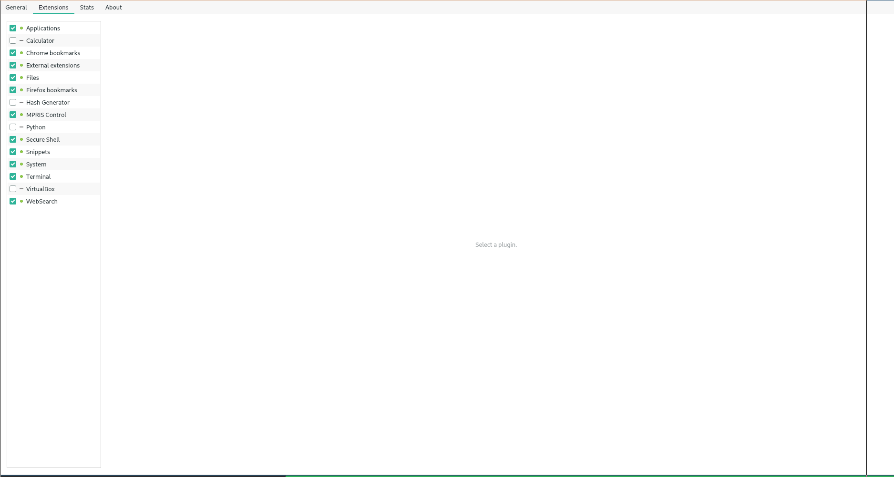

Manjaro-System-configuran
Manjaro System finish picture

一下配置文件都在 https://github.com/LEXSSAMA/Configure-file-of-Manjaro-System
步骤
1.首先下载镜像安装
２．换源
1 | |
选择一个好用的就可以，我选择的是
https://mirrors.sjtug.sjtu.edu.cn/manjaro/
３．更新系统
1 | |
４．配置VIM
1 | |
然后编辑$HOME下的.vim/vimrc文件即可
我的也是刚刚开始使用vim所以配置的内容并不丰富1
2
3
4
5
6
7
8
9
10
11
12
13
14
15
16
17
18
19
20
21
22
23
24
25
26
27
28
29
30
31
32
33
34
35
36
37
38syntax on
set number
set relativenumber
set hlsearch
set smartcase
set cursorline
set cursorcolumn
hi CursorColumn term=reverse ctermbg=white guibg=grey40
hi CursorColumn ctermbg=238 guibg=grey40
hi CursorLine term=underline cterm=underline guibg=grey40
set ignorecase
set cursorline
set wrap
set incsearch
set showcmd
set wildmenu
map s <nop>
map S :w<CR>
map Q :q<CR>
map R :source $MYVIMRC<CR>
noremap U 5k
noremap D 5j
call plug#begin('~/.vim/plugged')
Plug 'vim-airline/vim-airline'
Plug 'rakr/vim-one'
Plug 'preservim/nerdtree'
Plug 'ybian/smartim'
Plug 'arcticicestudio/nord-vim' Plug 'connorholyday/vim-snazzy'
Plug 'Valloric/YouCompleteMe'
Plug 'iamcco/markdown-preview.nvim', { 'do': 'cd app & yarn install' }
Plug 'dhruvasagar/vim-table-mode', { 'on': 'TableModeToggle' }
Plug 'vimwiki/vimwiki'
call plug#end()
let g:lightline = {
\ 'colorscheme': 'snazzy',
\ }
5.安装i3wm
1 | |
配置i3只需要配置~/.config/i3/config文件即可
安装完i3可能会有分辨率的问题可以修改$HOME下的.Xresources文件
添加一下语句：1
Xft.dpi = 200 #数字可以随便改
6.安装fcitx中文输入法
1 | |
将fcitx添加到环境变量中去1
sudo vim ~/.xprofile
然后在里面添加：1
2
3export GTK_IM_MODULE=fcitx
export QT_IM_MODULE=fcitx
export XMODIFIERS=”@im=fcitx”
最后在~/.config/i3/config文件中添加1
exec_always fcitx
这样开机就会直接启动fcitx了
7.安装alacritty
1 | |
在i3中修改alacritty的快捷键为mod+回车键1
bindsym $mod+return exec alacritty
配置alacritty只需要修改~/.config/alacritty/alacritty.yml文件即可
如果~/.config/文件中没有alacritty/alacritty.yml文件就自己创建一个，或者上github上面复制一个就可以了
如果要alacritty的透明的话要安装picom，这个软件就是以前的compton1
sudo pacman -S picom
执行picom,然后修改~/.config/alacritty/alacritty.yml1
background_opacity: 0.75
也可以修改成其他的值，我比较喜欢0.75的透明度
最后把picom加入i3的开机启动中
8.安装SSR
无图像界面的SSR client1
2
3
4wget http://www.texfox.com/ssr
sudo mv ssr /usr/local/bin
sudo chmod +x /usr/local/bin/ssr
ssr install
安装完成后配置SSR1
ssr config
把机场的SSR信息填入1
ssr start
就连接上了，有不明白的命令可以执行1
ssr help
有图像界面的SSR client可以用electron-ssr
链接：
https://github.com/qingshuisiyuan/electron-ssr-backup
9.安装google-chrome_(谷歌浏览器)
1 | |
因为很经常用到google所以我把它设置成i3的快捷键，即在~/.config/i3/config中添加下面语句1
bindsym $mod+c exec google-chrome-stable
10.安装Albert
因为i3默认的$mod+d的菜单快捷键太丑了，所以安装Albert

1 | |
在i3中设置albert开机启动
1 | |
然后修改albert的热键在终端第一次执行albert时会提醒修改热键，下图是我的配置．


因为我设置的热键ALT+d与i3的热键冲突（我的$mod键是ALT键）,所以我干脆取消了i3中的热键
11. 安装ranger
1 | |
配置ranger依旧是修改~/.config/ranger/rc.conf文件
如果没有这些文件可以自己创建，详细看官方
12. 安装网易云音乐
1 | |
13.安装QQ/TIM
1 | |
由于在i3的环境下，一打开QQ就会闪退，解决方法是1
yaourt -S gnome-setting-daemon
然后运行/usr/lib/gsd-xsettings(最好在i3配置中设置开机启动)，然后就可以运行ＱＱ了
14. 安装light
因为i3装上之后亮度调节是个问题所以装一个light1
sudo pacman -S light
要设置亮度的时候只要在命令行输入1
sudo light -S 20 #数值可改，我一般用２０
本博客所有文章除特别声明外，均采用 CC BY-SA 4.0 协议 ，转载请注明出处！